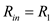
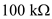
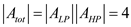

Step 1:
The wide-band bandpass filter obtained by cascading first-order op amp-RC low-pass circuit with a first-order op amp-RC high is shown in Figure 1.
Step 2:
The dc gain of the band pass filter is,
Step 3:
The input resistance of the circuit should be as high as possible and no resistor should be higher than  . So, select the input resistance as .
. So, select the input resistance as .
From the circuit, the input resistance is,

Rearrange the equation.

Substitute  for  in the equation.
in the equation.
Thus, the value of  is,
is, 
Step 4:
The total gain of the circuit is the multiplication of the gains of the both the blocks.

The gain of the low pass filter is,
Also, no resistor should be higher than .
.
So, consider the gain of the Low pass filter as unity  .
.
Thus, the value of  is, .
is, .
Step 5:
The 3-db frequency of the Low-pass filter is,
Rearrange the equation.
Thus, the value of  is,
is,
Step 6:
The overall gain of the circuit is,
From the circuit, the gain of the high pass filter is,
Assume the value of  as, .
as, .
Step 7:
Now, the value of resistance

is,
Thus, the value of resistance  is, .
is, .
Step 8:
The 3-db frequency of the high pass filter is,
Thus, the value of resistance  is, .
is, .